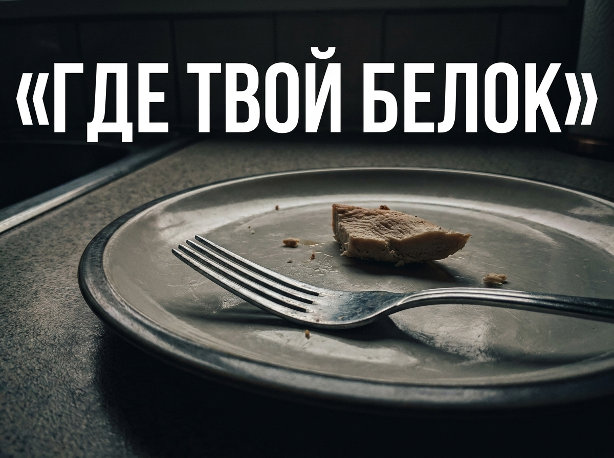

Аппетит пропал на фоне тренировок. Почему это опасно и что с этим делать

Сколько белка реально нужно при похудении и почему большинство его недобирает.
Почему на дефиците горят мышцы?
Когда вы начинаете урезать калории для похудения, организм предсказуемо пытается найти энергию внутри себя. Если в этот момент рацион проседает по макронутриентам, тело начинает разрушать собственные мышцы ради получения нужных аминокислот.
Ловушка «здорового» питания
Многие искренне считают, что едят достаточно, потому что съедают пару яиц на завтрак и небольшую порцию птицы на ужин. Однако для человека на дефиците калорий потребность в строительном материале резко возрастает.
Реальная норма часто уходит за 1.5 или даже 2 грамма на килограмм веса. Без этого «фундамента» тело будет упорно сопротивляться изменениям.
Реальный кейс: из практики
Недавно разбирал дневник питания нового клиента, который жаловался на постоянный голод и слабость на диете. По калориям всё было рассчитано верно, но белка набиралось едва 60 граммов за весь день. Мы просто увеличили порции рыбы и добавили протеин, и уже через неделю объемы снова начали уходить.
Особенности для девушек
Особенно внимательными нужно быть девушкам, так как женский организм хуже усваивает белок по сравнению с мужским.
- Тайминг: Для запуска синтеза мышечного белка рекомендуется потреблять 30г белка в течение 30-60 минут после тренировки.
- Разнообразие: Не зацикливайтесь на грудке, используйте рыбу, морепродукты и растительные источники.
Что делать прямо сейчас?
Вам нужно пересмотреть свои тарелки и сделать так, чтобы качественный источник белка был в каждом приёме пищи, а не только вечером. Это поможет сохранить мышечную массу, поддержит сытость и защитит ваш метаболизм от замедления.
Метафитнес
Больше прикладной механики тренировок и разборов питания без воды в моем Telegram канале.